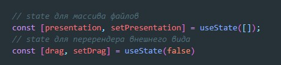
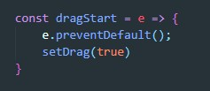
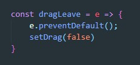
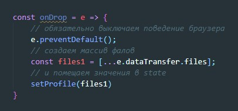

Первое что делаем это создаем два state для массива файлов и состоянием области DnD
Далее на область куда будем перетаскивать (обыкновенный div) вешаем три слушателя события
onDragStart onDragOver - должны запускать функцию которая будет менять наш state в значение true.
Обязательно не забываем отключать стандартное поведение браузера
onDragLeave - должна вызывать функцию которая будет делать обратное, т.е. возвращать state в значение false
Для чего нужна эта игра со state? C помощью значения true или false мы можем визуально изменять нашу область куда перетаскивается файл, например добавлять стили которые будут меня цвет фона и т.д
Без этих трех слушателей ничего не будет работать.
Теперь повесим на нашу область четвертый слушатель - onDrop. Это событие сработает когда мы отпустим файлы. Получить файлы можно с помощью свойства объекта события e.dataTransfer.files. В массиве files буду храниться наши файлы
